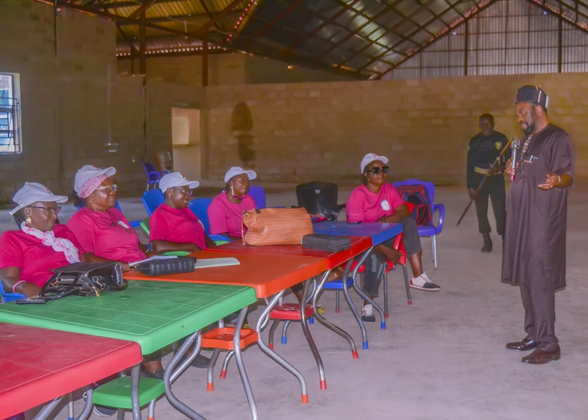
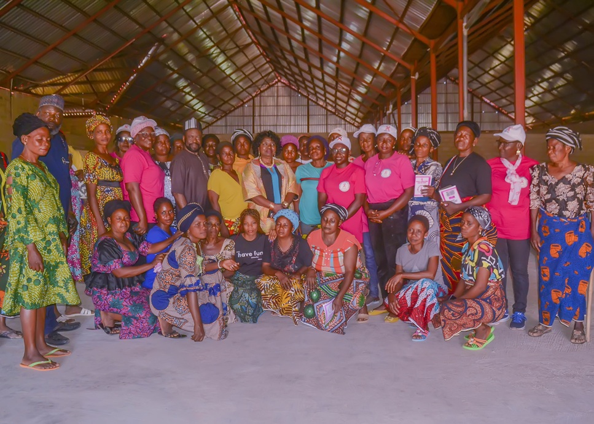
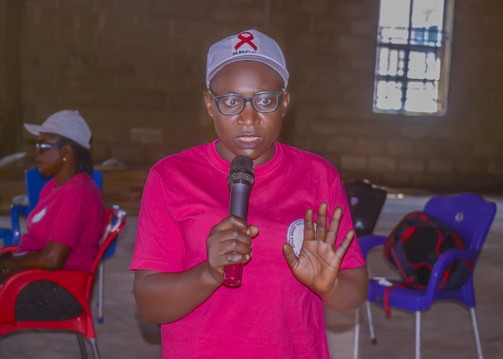

BBCSI Brings Cancer Awareness to Suswam Village
Published: 20 December 2025 · Author: BBCSI
The Benue Breast Cancer Support Initiative (BBCSI) visited Suswam village in the Ushongo local government area of Benue State on December 20, 2025 at the invitation of Prof & Dr. Mrs. Uvah. They invited BBCSI to conduct a cancer awareness campaign in their village. It was a successful outing for BBCSI. We had over 100 persons in attendance.
Community Partnership: A Welcome Invitation
The outreach program was made possible through the gracious invitation of Prof & Dr. Mrs. Uvah, who recognized the critical need for cancer awareness in their community. Their initiative in bringing BBCSI to Suswam village demonstrates the power of community-driven health education and the importance of local leadership in addressing public health challenges.
"When communities take the lead in inviting health education initiatives, real change begins to happen. The people of Suswam village have shown remarkable commitment to the health and wellbeing of their community."

Awareness Campaign Highlights
During the comprehensive awareness session, BBCSI team members covered crucial topics including breast cancer risk factors, early detection methods, self-examination techniques, and available treatment options. The interactive format allowed community members to ask questions and share concerns, creating an open dialogue about health issues that are often considered taboo in many communities.
Topics Covered
- Breast cancer awareness
- Early detection methods
- Available treatment options
- Support systems for survivors
Program Achievements
- High community turnout
- Interactive Q&A sessions
- Distribution of educational materials
- Community commitment to health

Community Impact and Testimonials
The success of the Suswam village outreach goes beyond mere numbers. It represents a breakthrough in community health education and demonstrates the effectiveness of partnership-based approaches to public health challenges. The community's enthusiastic participation and engagement throughout the session showed their genuine interest in taking control of their health outcomes.

Looking Forward: Continued Partnership
The successful Suswam village outreach marks another milestone in BBCSI's mission to bring cancer awareness to every corner of Benue State. The organization remains committed to continuing such partnerships and reaching more communities with vital health education. The positive response from Suswam village serves as inspiration for future outreach programs and reinforces the importance of community-based health initiatives.
Call to Action
The success of this outreach demonstrates the power of community partnership in health education. BBCSI calls on other community leaders and organizations to join in this vital mission of spreading cancer awareness throughout Benue State.
- Invite BBCSI to your community
- Support cancer awareness initiatives
- Share knowledge with family and friends
- Participate in regular health screenings
Together, We Can Save Lives
Join BBCSI in bringing cancer awareness to more communities across Benue State. Your support makes these life-saving outreach programs possible.
Get Involved Today